Vocal Source Separation from Musical Mixtures
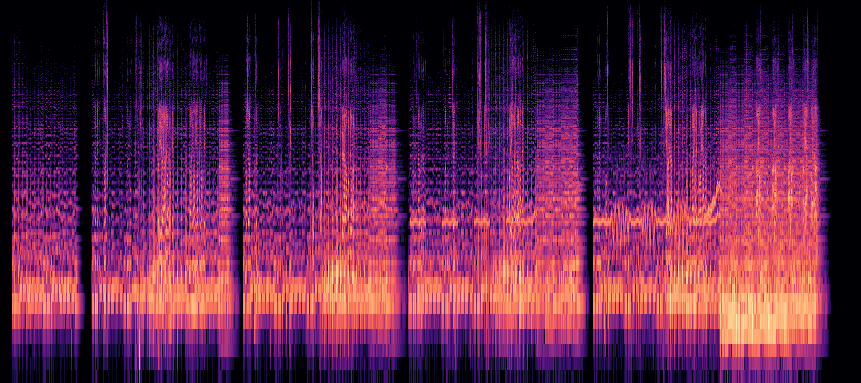
Fourth-year student at BITS Pilani Hyderabad Campus | Research in 3D reconstruction, CAD modeling, vision-language models, and novel neural architectures
I'm a fourth-year dual-degree student at BITS Pilani Hyderabad Campus pursuing a B.E. in Computer Science and M.Sc. in Physics. My research focuses on 3D computer vision in AI-assisted design, spanning geometric representations, vision-language models, 3D reconstruction and modeling, multimodal deep learning, and large-scale model training.
I'm experienced in VLM fine-tuning, multi-GPU training, and HPC environments. I'm interested in novel neural architectures and alternative 3D representations for real-world applications.
Languages
ML & Training
3D & Vision
Tools
Models Worked With
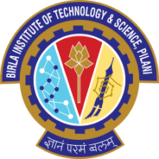
Undergraduate Research Assistant
3D Vision Group, BITS Pilani Hyderabad Campus - - Present
Supervisor: Dr. S. K. Aziz Ali
Undergraduate Researcher, Statistical Physics and ML
Two-Phase Flow in Porous Media, BITS Pilani Hyderabad Campus - - Present
Supervisor: Dr. Subhadeep Roy
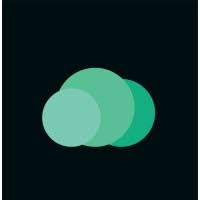
Software Engineer Intern
CloudDefense.AI - -
Location: Remote, Palo Alto, California

3D Vision Summer School
IIIT Hyderabad : Selected Participant - June 22-28, 2025
Vocal Source Separation from Musical Mixtures

Propositional Logic Parsing and CNF Analysis Pipeline
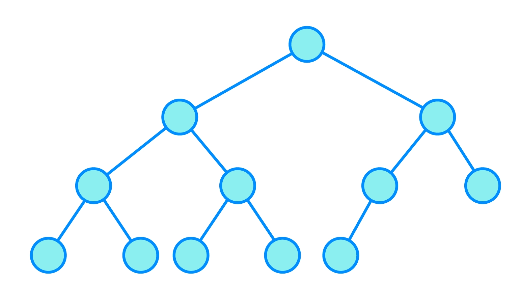
ICP Generator using Web & LinkedIn Scraping + LLMs
Pritham K Jena, Bhavika Baburaj, Tushar Anand, Vedant Dutta, Vineeth Ulavala, Sk Aziz Ali
CVPR 2026 | Second Author
A large-scale dataset and benchmarking framework for geometric deep learning on CAD models with comprehensive B-Rep annotations, enabling advances in AI-assisted design and reverse engineering.
BITS Pilani, Hyderabad Campus
B.E. in Computer Science + M.Sc. in Physics - -
Dual-degree program combining engineering fundamentals with advanced physics research, focusing on 3D vision, multimodal learning, and computational methods.
Relevant Coursework:
HMR International School, Bengaluru
Class XII (CBSE) - 2023
CMR National Public School, Bengaluru
Class X (CBSE) - 2021
Vocal Source Separation from Musical Mixtures
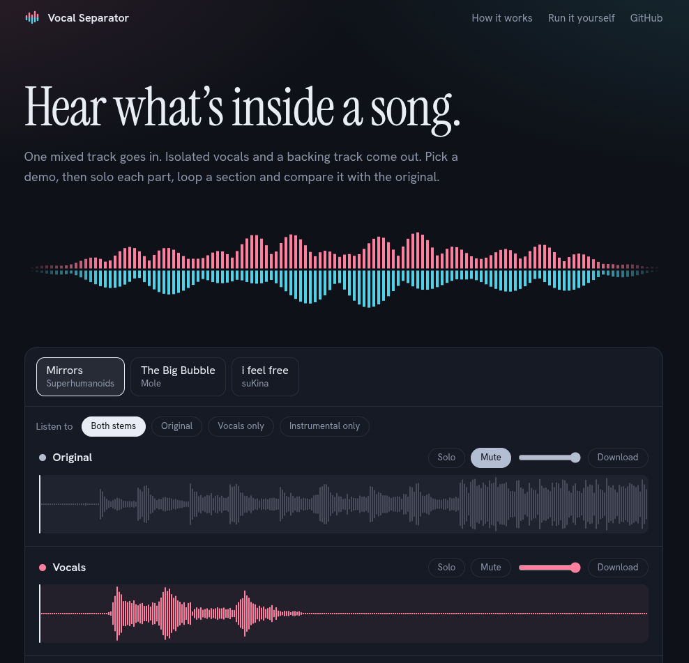
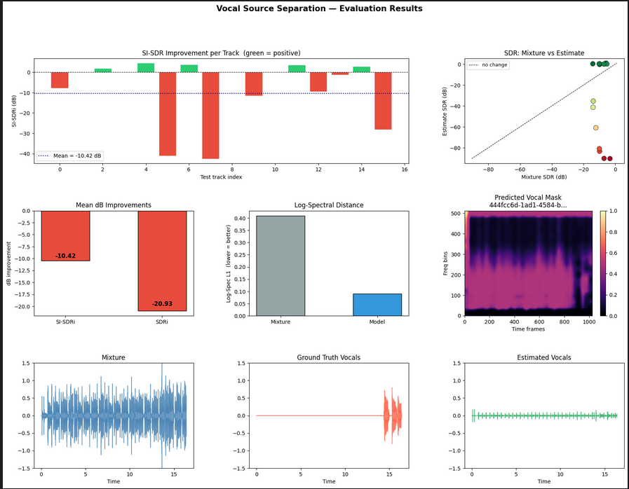
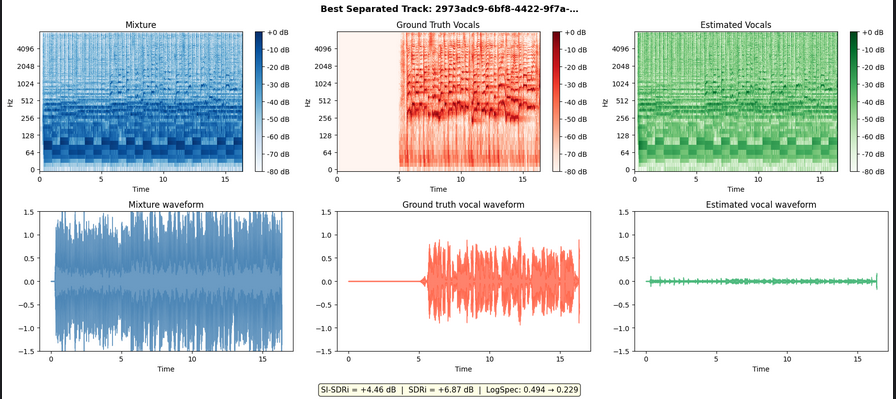
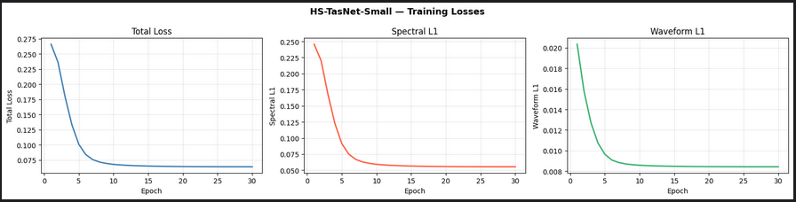
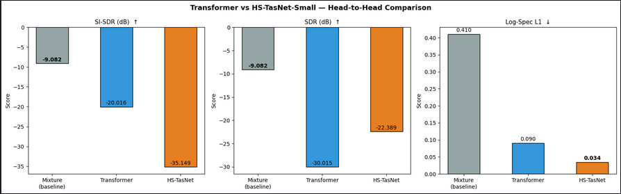
Built two vocal separation models from scratch: a Transformer-based spectrogram masker and a hybrid Spectrogram-TasNet combining BiLSTM and waveform-processing branches. Trained on 80 MoisesDB songs using 2x T4 GPUs, reducing log-spectral L1 loss from 0.41 to 0.034, but found that this did not translate to better waveform separation (phase-reconstruction limits of magnitude masking).
Fine-tuned a pretrained HTDemucs with stem mixing and data augmentation, achieving 11.54 dB vocal SDR on 10 held-out songs, comparable to the pretrained model (11.51 dB). Built a FastAPI web app for uploading songs and listening to the separated vocals and instrumentals.
Propositional Logic Parsing and CNF Analysis Pipeline
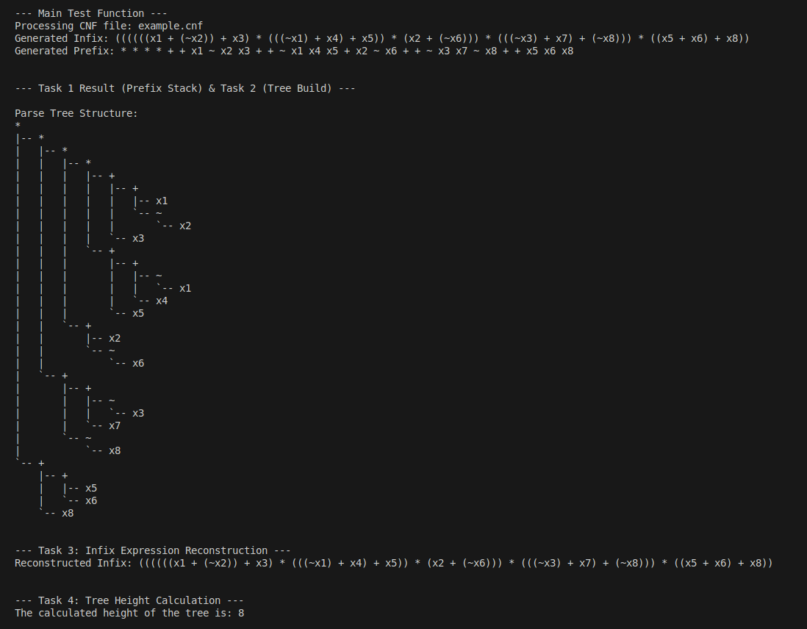
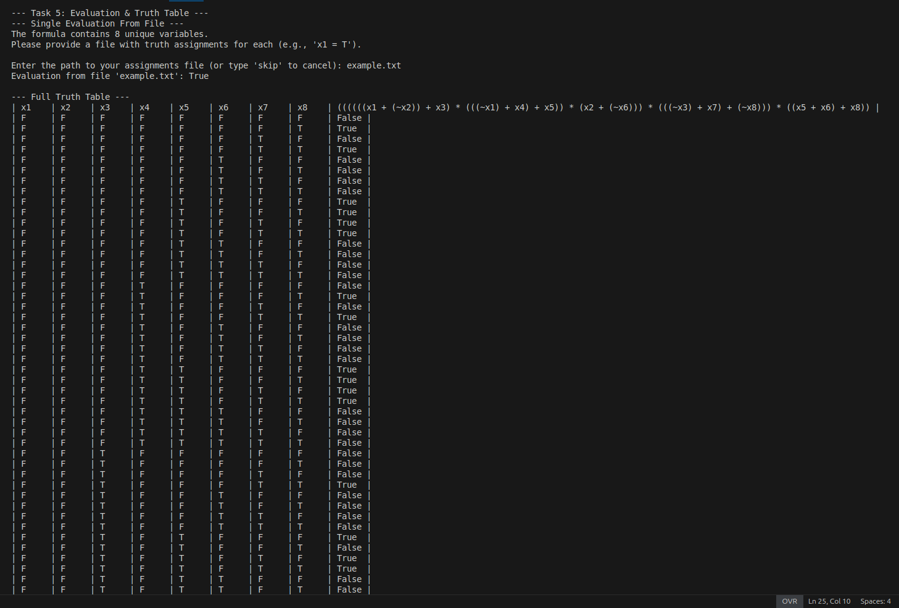
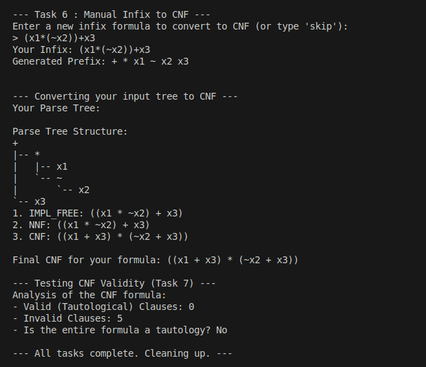
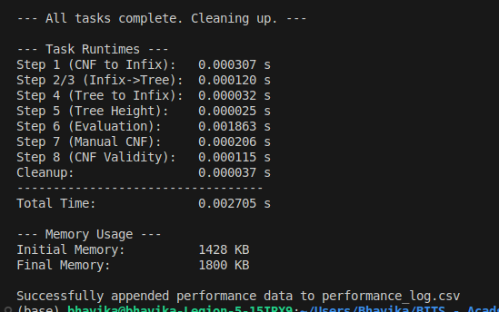
Built a C-based propositional logic pipeline for parsing, parse-tree construction, truth-table generation, and CNF transformation. Implemented infix-to-prefix parsing and stack-based tree construction using stacks, trees, and hash tables.
Analyzed time and space complexity, identifying exponential bottlenecks in truth-table generation and CNF conversion. This project strengthened understanding of formal logic, compiler design principles, and data structure optimization.
ICP Generator using Web & LinkedIn Scraping + LLMs
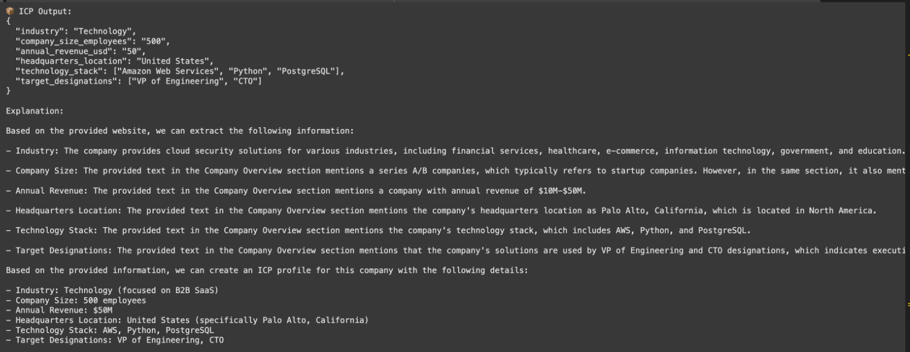
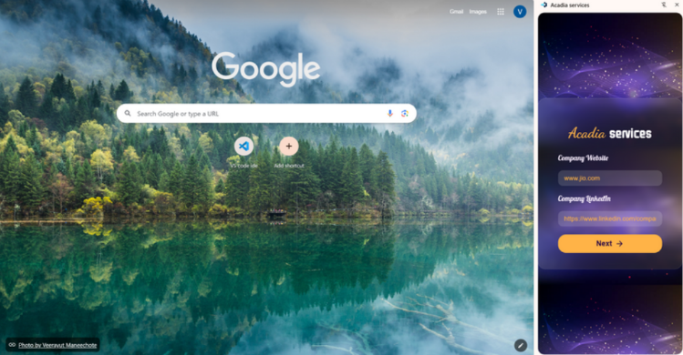
Built an automated ICP (Ideal Customer Profile) generation pipeline that scraped public company websites and LinkedIn pages and converted extracted data into structured business profiles using LLMs. Benchmarked compact LLMs including Phi-4, DeepSeek-7B, Qwen2.5, LLaMA-3-7B, and Zephyr-7B for structured JSON generation.
Deployed the final system through a Chrome extension backed by a local API, enabling seamless access to generated ICPs. This project demonstrated end-to-end LLM integration, web scraping, API design, and browser extension development.